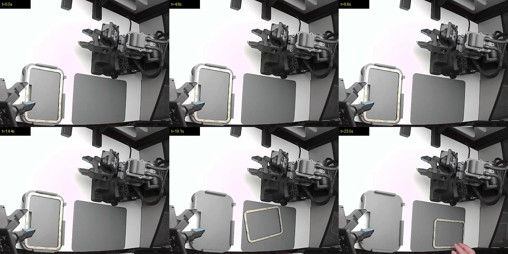
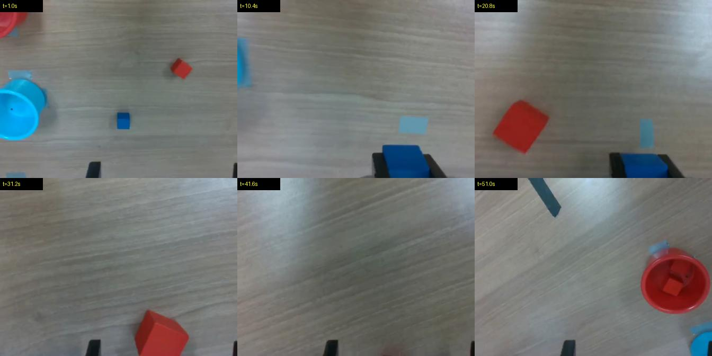
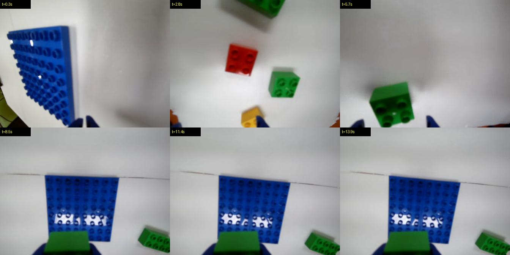
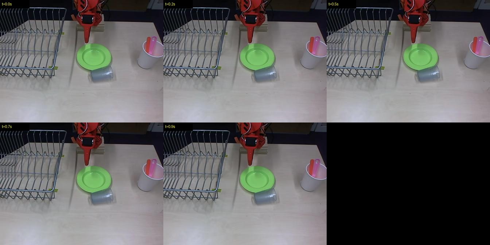

What we found in Hugging Face's community robot data
We scanned every sub-dataset of lerobot/community_dataset_v3 (1,754 datasets from 488 contributors) on a laptop overnight. Every finding below comes from a deterministic check, involves no AI judgment, and was verified by hand.
7.1% of all episodes (5,125) are exact motion duplicates (every joint, every frame) of episodes elsewhere in the collection. 777 duplicated recordings span different contributors, and 97 dataset pairs are at least 80% the same recordings. In a pretraining mix, duplicates silently over-weight some demos and leak between train and test splits. That is roughly 26 hours of duplicated robot data (≈ 5,125 episodes × 18.1 s average).
Reviewing all 364.6 hours by hand would take about 365 person-hours. Retake's integrity layer scanned it for $0; running the vision layer on all 72,356 episodes would cost about $80 at the measured $1.10 per 1,000 episodes.
763 episodes (1.05%) are objectively broken:
| Issue | Episodes |
|---|---|
| Empty fragment (under 1 s, some a single frame) | 338 |
| Robot never moves (every joint constant) | 219 |
| Duplicated inside the same dataset | 138 |
| Video and motion lengths disagree | 71 |
| Frozen joint sensor on a commanded arm | 56 |
| Timestamps run backwards | 15 |
Verified examples
1g0rrr/demo2_frames_grab ep11: 23.9 s, every joint constant; people move objects around a motionless arm.

Arururu12/UR5e_Gello_Cube_bin_v3 ep1: six arm joints read constant for 52 s while commanded up to 0.31 rad; the gripper is logged normally.

Dangvi/soarm100_data ep0 = s20000s/soarm100_data ep0: max difference 0.000000 across 426 frames.

HuaihaiLyu/hamburger0509 episodes 84-90 = 91-97: identical motion and identical frames.

7jep7/rook_to_d4_v5 ep4: the entire episode is a single frame.

kantine/BotFails setTheTable expert ep7: 1.2 s, the robot never moves.
